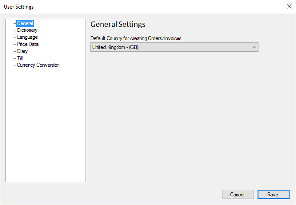

General
Previous
Top
Next
General settings for the POS.

Default Country for creating Orders/Invoices
. This is the default country used for creating invoices and orders, users can still change to a separate country on order creation.